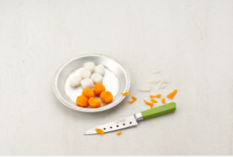
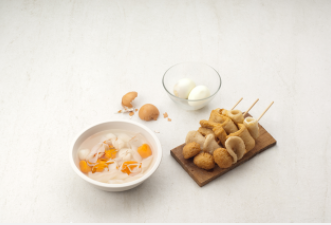
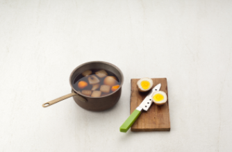
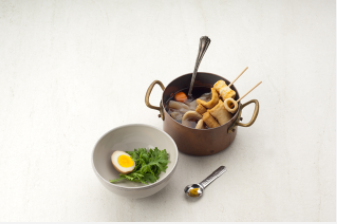

Japanese Food


재료 리스트
꼬치탕용 어묵 | 무 200g | 다시마 1장 | 가다랭이포 1/3컵 | 당근 1/4개 | 달걀 2개 | 곤약 80g | 연겨자 | 쑥갓
일본식 어묵탕 양념( 소금 약간 | 간장 4큰술 | 청주 3큰술 | 설탕 1큰술 )
레시피
1. 무와 당근을 밤알 만한 크기로 잘라 모서리를 둥글게 다듬어 주세요.

2. 끓는 물에 무와 당근을 넣어 반 정도 익으면 건져준 뒤
곤약과 어묵은 살짝 데쳐 건져 주세요.
달걀은 완숙으로 익혀 껍질을 벗겨 주세요.

3. 냄비에 다시 물 3컵과 간장 3큰술, 청주 2큰술, 설탕 1큰술을 넣고
익힌 무와 당근, 곤약, 삶은 달걀을 넣어
약한 불에서 10분 정도 졸인 뒤
달걀은 반으로 썰어 주세요.

4. 냄비에 무와 당근, 곤약, 어묵을 담고 다시 물5컵과 간장 1큰술, 청주 1큰술을 넣어
중불에서 3분정도 끓인 뒤 설탕 약간과 소금 약간으로 간을 해주세요.
그 뒤 그릇에 달걀과 쑥갓, 완성된 어묵탕을 담고 연겨자를 곁들여주세요.

일본식 어묵탕 완성 !!